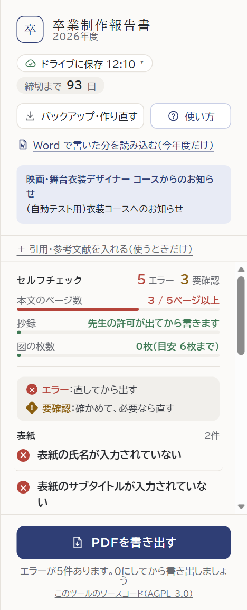
v35 デザイン案（5つ）
質問ごとに1つ選んでください（②は1つの案です）。画面は本物のツールを開いて、案の部分だけ書き足して写したものです。指摘の数や中身も本物です（絵を押すと大きく見られます）。
書き始めたばかりで「まだ書いていない」だけなのに、赤い「5 エラー」が出て、こわく見えます。
抄録は緑で「許可が出てから書きます」なのに、一覧では赤い ×。上の半分も、欄の半分ほどを使っています。
まだ書いていない所も、赤いエラーになる。
まだの所は灰色の ○（済むと緑の ✓）。赤と黄は、書いた文の間違いだけ。
よいところ見ているページの指摘だけ開く。ほかのページは閉じておく。
よいところ次にやることを1つだけ大きく。ほかは「一覧を開く」で。
よいところ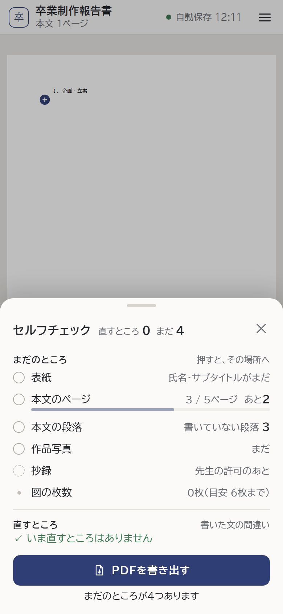
スマホ：始めたばかり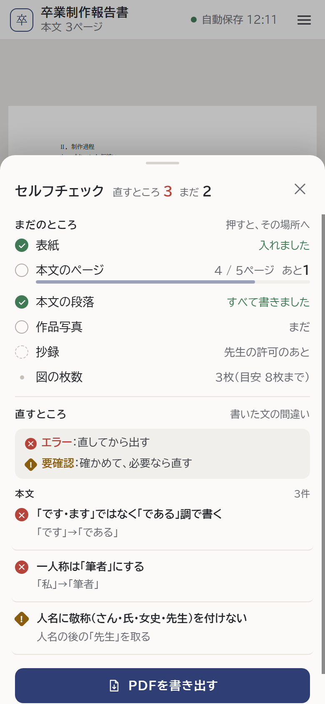
スマホ：書いている途中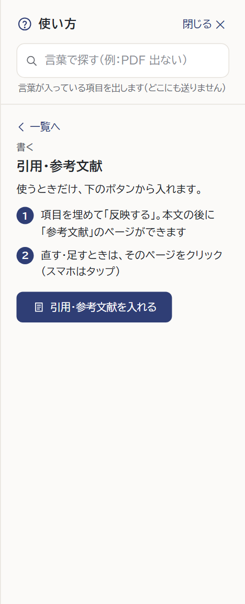
「？ 使い方」→「引用・参考文献」いまは「空の表（2列）」を押すと、いつも2列×2行で入り、あとから行・列を足します。入れる前に大きさを選べるようにします。
パソコンはます目、スマホは［−］［＋］（決めていただいた形。1つずつ描きました）。
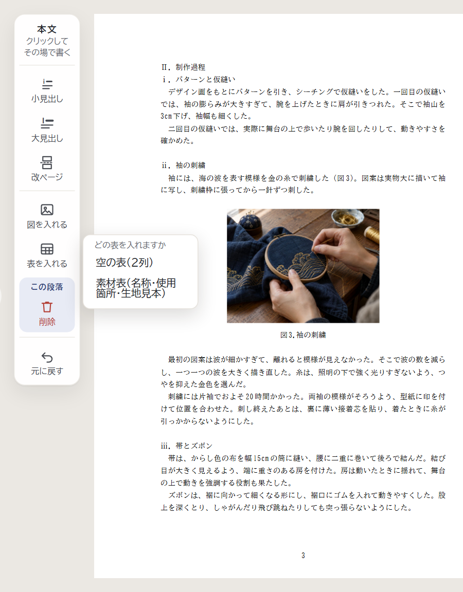
いま：どの表を入れますか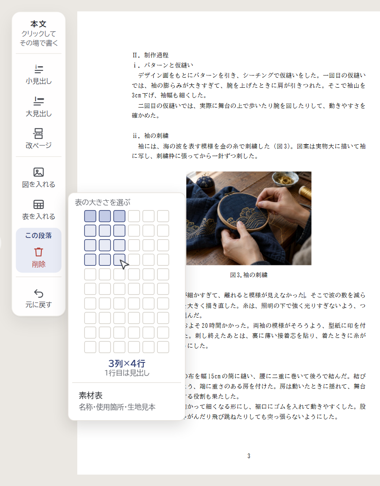
案：3列×4行に乗せたところ（濃い行が見出し）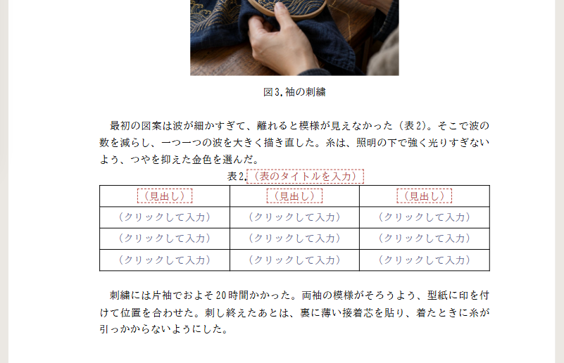
押したあと：3列×4行の表が入る（本物の表）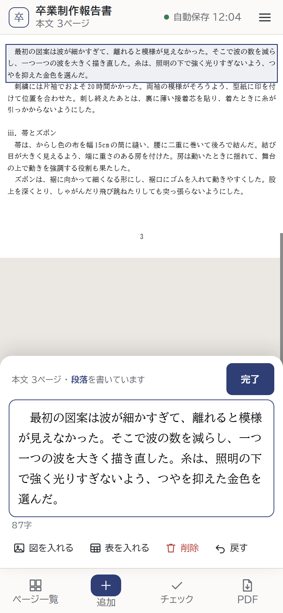
案：「素材表」は出さない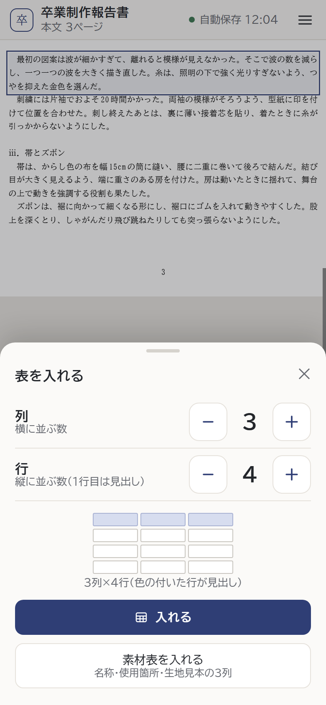
「表を入れる」を押すと（3列×4行にしたところ）いまのページと次のページを並べ、1–2、3–4…と2ページずつめくります。ノートパソコンでは、字がかなり小さくなります（下の「画面のままの大きさ」）。
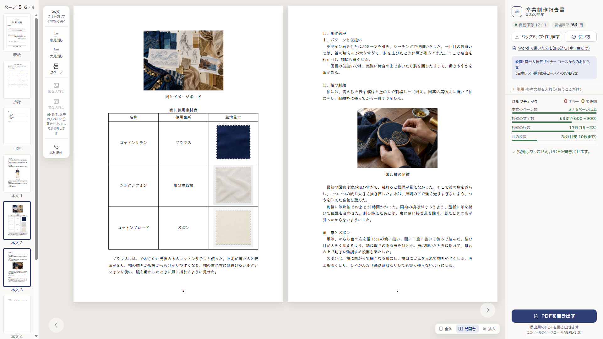
見開き：5〜6ページ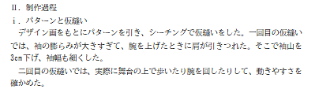
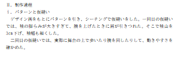
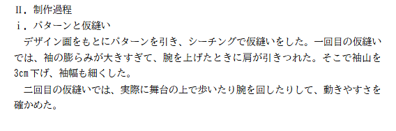
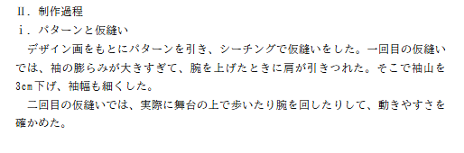
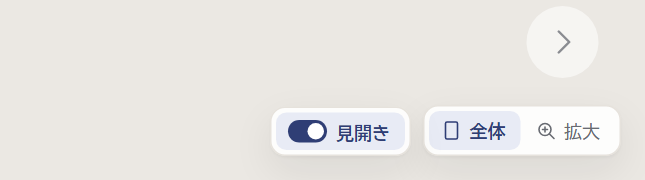
右下（1366×768）いまは「元に戻す」（Ctrl+Z）だけです。戻しすぎたときに進める「やり直す」（Ctrl+Y、Mac は ⌘+Shift+Z）を足します。置き場所を1つ選んでください。
「やり直す」のボタンはない。
いまの場所に、2つを横に並べる。
よいところ左の道具から外し、右下にまとめる。
よいところ印だけのボタン。名前は、マウスを乗せると出る。
よいところエラーが0件になると、下書きの PDF を選べません。先生に最後に見てもらうには、まだなのに「了承を得た」にチェックを入れることになります。